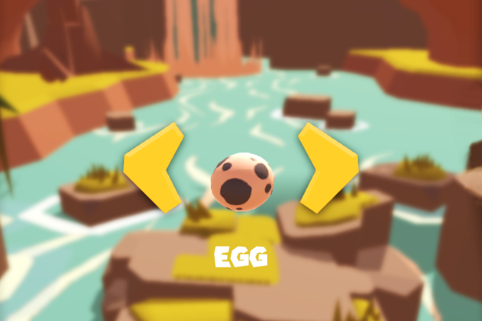

<div class="container">

<!--Projects section v.2-->
<section class="section text-center">

    <!--Section heading-->
    <h2 class="font-weight-bold h1 py-5">
      <strong>Tous les projets</strong>
    </h2>
    <!--Section description-->
    <p class="grey-text pb-5 text-center mx-xl-5 px-xl-5">Depuis le début de ma dernière année à Polyech, je consacre une grande partie de mon temps libre à mes projets personnels. Les domaines sont variés, mais principalement le développement de jeux sur le moteur Unity. En voici la liste...</p>
  
    <!--Grid row-->
    <div class="row d-flex justify-content-center">
  
      <!--Grid column-->
      <div class="col-lg-6 col-xl-5 mb-3">
  
        <!--Featured image-->
        <div class="view overlay rounded z-depth-2  waves-light" mdbWavesEffect>
          
          <a>
            <div class="mask rgba-white-slight"></div>
          </a>
        </div>
  
        <!--Excerpt-->
        <mdb-card-body>
          <a href="" class="green-text">
            <h5 class="font-weight-bold mt-2 mb-2">
                <i class="fas fa-gamepad"></i> Jeu mobile</h5>
          </a>
          <h4 class="font-weight-bold mt-2 mb-3">Jungle Jump</h4>
          <p>Mon premier jeu mobile (Android). Je l'ai réalisé durant un stage dans un studio indépendant.</p>
          <a mdbBtn color="success" size="md" rounded="true" class="waves-light" mdbWavesEffect> Plus d'info</a>
        </mdb-card-body>
  
      </div>
      <!--Grid column-->
  
    </div>
    <!--Grid row-->
  
  </section>
  <!--/Projects section v.2-->

</div>